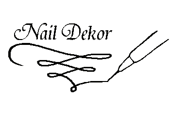

Наращивание ногтей. Все виды маникюра.
Ваш неповторимый образ создают детали
На что обратит внимание клиент, прежде чем сесть за уютный столик мастера маникюра?- конечно же, на состояние его рук и ногтей. И если клиентка увидела неряху с неухоженными ногтями со сколотой кромкой лака, — считайте, что визит клиента был последним, если он вообще будет иметь место — клиент вправе отказаться от услуг не понравившегося мастера… Что еще должно быть в арсенале идеального мастера ногтевого сервиса? — приятный внешний вид Так же, как врачу или психологу, мастеру маникюра хочется доверять. Ведь к вам приходят не только привести в порядок руки, но и получить удовольствие. Поэтому, кроме идеального состояния рук, у мастера в целом должен быть аккуратный внешний вид. Ну не может неухоженный мастер делать красивыми других! Поэтому на рабочем месте обязательно должна быть маска, защищающая лицо мастера от мелких частиц пыли и рабочий фартук, прикрывающий одежду. — аккуратное рабочее место Если ваш столик похож на военный полигон после взрыва, пилочки разбросаны, а слова «стерилизация» и «дезинфекция « вы слышали только в кабинете ветеринара – клиенты сбегут после первого же визита. Рабочее место профессионального мастера должно быть похоже на кабинет хирурга – такая же идеальная чистота. — опыт, дипломы и прочее… Мало кто спрашивает медицинскую книжку мастера маникюра (хотя следовало бы). А вот опыт работы интересен всем. Если стена вашего кабинета украшена дипломами, сертификатами, а на столике лежит альбом с шикарными фото личных работ – вы заслужили немало бонусов! Ведь очень часто при первом знакомстве с мастером клиент хочет ознакомиться с образцами его работ, и это очень правильно! А дипломы и сертификаты, подтверждающие Ваше участие в конкурсах, тренингах, семинарах и мастер-классах являются лучшим подтверждением неугасающего интереса мастера к своему делу и истинного профессионализма. — гигиена – ваше все! Ваши клиенты хотят оставаться не только красивыми, но и здоровыми. В первую очередь они обратят внимание, где и как стерилизуются инструменты. Для этой цели должен быть предусмотрен сухожаровой шкаф или шариковый (гласперленовый) стерилизатор, средства для дезинфекции рук и инструмента. И три этапа обработки инструментария— дезинфекция, очистка и стерилизация неукоснительно должны быть соблюдены. На случай пореза (всякое случается!) в аптечке обязательно должно находиться кровоостанавливающее средство, — все – для удобства клиентов Однажды, сменив мастера нейл-арта, моя подруга несказанно удивилась: «Ты представляешь, во время коррекции ногтей я впервые не наглоталась пыли! У мастера был компактный пылесос. Моя бывшая маникюрщица о таком даже не подозревала…». Будьте уверены: ваши высокооплачиваемые конкурентки непременно позаботятся о том, чтобы во время процедуры клиентам было максимально удобно. Возьмите себе это на вооружение. Современные технические средства – вытяжка, УФ-лампа, причем не слабенькая бытовая, на 8 ватт, а профессиональная 36-ваттная индукционная лампа, очиститель воздуха всегда должны находиться на почетном месте. И, конечно же, нельзя получить отличный результат на дешевых гель-лаках неизвестного производителя. Выстроенные красивой шеренгой новенькие гель-лаки известного американского бренда всегда впечатляют лучше слов. Хорош ли ваш мастер, в итоге может показать только его работа. Конечно, клиентки обратят внимание еще и на обращение, материалы, которые используются, новые техники, и на аккуратность каждого мазка. Но если вами остались довольны, пришли снова и порекомендовали вас подругам – можете смело назвать себя идеальным мастером маникюра.
Хотите посетить мастер-класс?
Какой он, идеальный мастер маникюра?
Качество, оригинальность, индивидуальный подход - основные принцыпы работы компании.
От нас Вы уйдете довольными и отдохнувшими.
Приглашаем посетить мастер-класс Виктории Котляренко.
Китайская техника роспись ногтей плоской кистью,
который пройдет в январе-феврале 2015 Украина-Днепропетровск. Стоимость мастер-класса 250 грн.Место и точное место уточняется после регистрации на участие. За каждые 600 грн в чеке в подарок Цветной гель (Color Gel) Blaze Nails!
(любой цвет на выбор)
Количество в одном чеке не ограничено!озможна доставка товара через службу Delivery (Деливери
Доставка осуществляется после предоплаты.
По такой же схеме работает доставка в некоторые другие города области.